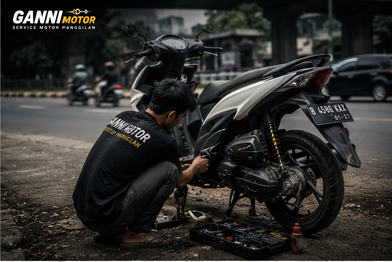
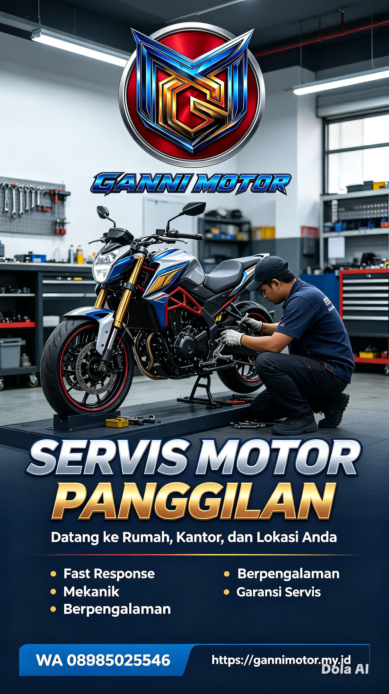

Motor Mogok di Jalan atau di Rumah? DIMANA PUN & KAPAN PUN disaat anda membutuhkan,
Apapun merk Motornya,
HONDA, YAMAHA, SUZUKI, KAWASAKI, BAJAJ, TVS, VESPA MATIK,DLL.Kami perbaiki..!!!
Melayani kendala motor mogok di jalan,kantor,maupun
servis rutin di rumah (Home Service).
Servis Motor Panggilan Jakarta
Ganni Motor melayani servis motor panggilan
di Cakung, Pulogebang, Penggilingan,
Duren Sawit, Klender, Jatinegara
dan seluruh Jakarta Timur.
Layanan meliputi servis Honda Beat, Stylo
Vario, Scoopy, PCX, NMAX, Aerox, Fazzio
Mio dan motor injeksi lainnya.
Pertanyaan Umum
Berapa lama mekanik datang?
Estimasi sesuai lokasi dan kondisi lalu lintas.
Apakah bisa servis motor di rumah?
Bisa. Mekanik datang langsung ke rumah, kantor, atau lokasi motor mogok.
Motor saya mogok di jalan, apakah bisa dibantu?
Bisa. Kirim lokasi (share location), mekanik akan menuju lokasi Anda.

Kepercayaan pelanggan dibangun melalui hasil kerja yang rapi dan profesional.
Testimoni Pelanggan
⭐⭐⭐⭐⭐ "Rekomended pokoknya, saya share di grup WA yaa" - Bu Jamilah - warga Rorotan - Maret 2026
⭐⭐⭐⭐⭐ "Pelayanan ramah dan informatif. Sepanjang servis motor di rumah, mekaniknya mau ngejelasin detail kerusakan dan kasih tips merawat mesin supaya awet. Hasil kerjanya memuaskan, motor jadi enteng lagi."Pak Burhan - Komplek Bea Cukai,Pd Bambu - Maret 2026
⭐⭐⭐⭐⭐ "Jam 11 malam Motor Aerox saya kode 12, kata 👨🔧 ; gak perlu ganti,saya perbaiki aja yaa, 👨⚕ : jarang ada montir yang masih mau akal-akalin" 👍👍Teguh - Duren Sawit - April 2026
⭐⭐⭐⭐⭐ "Mekanik nya Open mind banget,sangat mengedukasi". - Mba Ratih-Kramat jati - Mei 2026
⭐⭐⭐⭐⭐ "Motor saya mogok,Chat, gak sampe 20 menit mekanik dateng. sekitar 90 menit motor saya hidup lagi" - Mba Rani - Rawamangun - Mei 2026

Pengerjaan Motor Customer yang Mogok di Jalan. Kami juga siap melakukan pengerjaan dimanapun.